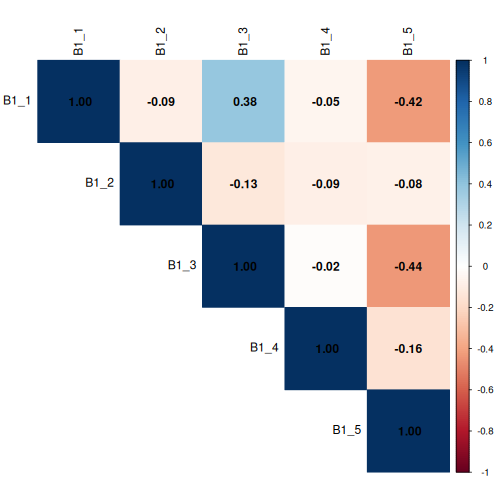

R дахь тоон мэдээллийн шинжилгээ
Last updated on 2026-04-28 | Edit this page
Estimated time: 90 minutes
Overview
Questions
- Би ямар статистик тестийг ашиглах ёстой вэ?
- Хэрхэн олон тестийг нэгэн зэрэг явуулах вэ?
Objectives
- Өгөгдлийг уншиж, хувьсагчид зөв өгөгдлийн төрөлтэй эсэхийг шалгаарай
- Хайгуулын мэдээллийн дүн шинжилгээ хийх
- Өгөгдсөн хувьсагчийн төрөл болон судалгааны асуултын зөв статистик тестийг тодорхойлох
- R Notebook дээр хи-квадрат тест, t-тест болон нэг талын ANOVA-г ажиллуулаарай
- p-утга, тестийн статистик болон нөлөөллийн хэмжээг контекстээр тайлбарлах
- Аналитикийг баримтжуулахын тулд R Notebooks дээр тодорхой тайлбар бичвэр бичнэ үү шийдвэрүүд
- Туршилт бүрийн үндсэн таамаглалыг таньж, R-д шалгана уу
Бусад материал
Өгөгдлийн багцын тойм
Энэхүү семинар нь 1005 агуулсан үүсгэсэн (бүтээсэн) өгөгдлийн багцыг ашигладаг Ажлын болон ажил амьдралын уян хатан тэнцвэртэй байдлын талаарх санал асуулгын хариу, a өөр өөр төрлийн өгөгдлийн тоо.
Схемийг дараах хүснэгтэд оруулсан болно.
Ажил, ажил амьдралын тэнцвэрт байдлын судалгааны уян хатан схем
| Section | Variable | Type | Description |
|---|---|---|---|
| A (Demographics) | A1 – Gender | Factor (male, female) | What is your gender? |
| A2 – Age Group | Ordered Factor (18–34, 35–54, 55+) | What is your age? | |
| A3 – Education | Ordered Factor (primary, secondary, tertiary+) | What is your highest level of education? | |
| A4 – Income | Ordered Factor (low, middle, high) | What is your annual income? | |
| A5 – Region | Factor (region 1, 2, 3) | What is your region of residence? | |
| A6 – Area Type | Factor (rural, urban) | Is your region of residence urban or rural? | |
| B (Policy Views) | B1 | Character | What should be the main goal of flexible working policies? (Select up to 3) |
| B1_1 | Logical | Improve employee wellbeing & work-life balance | |
| B1_2 | Logical | Boost productivity & business performance | |
| B1_3 | Logical | Attract & retain top talent | |
| B1_4 | Logical | Reduce costs & office overhead | |
| B1_5 | Logical | Support diversity, equity & inclusion | |
| B2 | Character | Who should benefit most from flexible working arrangements? (Select up to 3) | |
| B2_1 | Logical | All employees equally, regardless of role or seniority | |
| B2_2 | Logical | Parents and caregivers with dependants | |
| B2_3 | Logical | Employees with disabilities or chronic health conditions | |
| B2_4 | Logical | Junior/entry-level employees building their careers | |
| B2_5 | Logical | Senior/experienced employees with proven track records | |
| B2_6 | Logical | Employees with long commutes or remote locations | |
| B2_7 | Logical | Employees from underrepresented or marginalised groups | |
| B2_8 | Logical | High performers and those meeting targets consistently | |
| C (Satisfaction) | C1 | Integer (1–5) | How satisfied are you with your current flexible working arrangements? (1 = least satisfied, 5 = most satisfied) |
| C2 | Integer (1–5) | To what extent do flexible working options improve your work-life balance? (1 = very little, 5 = very much) | |
| C3 | Integer (1–5) | How strongly do you agree that your employer supports flexible working in practice? (1 = very little, 5 = very much) | |
| D (Commute) | D1 | Numeric | What is your commute time to work in minutes? |
| D2 | Numeric | What is your commute distance in km? | |
| E (Outcomes) | E1 | Ordered Factor (strongly dissatisfied → strongly satisfied) | How satisfied are you with your current work-life balance? |
| E2 | Free text | What makes you most satisfied in your personal life? |
Тохируулах
a-д үүсгэсэн RStudio төслөө нээж эхэл өмнөх
workshop, intro_r гэж нэрлэгддэг шинэ сесс.
global environment байгаа эсэхийг шалгаарай хоосон! Та мөн
дээр дарж global environment-ээ “шүүрдэж” болно
broom дүрс тэмдэг.

Шинэ R Notebook нээнэ үү:
Click File -> New File -> R Notebook. Хадгалах гэх
мэт утга учиртай файлын нэрээр таны R Notebook
quantitative_analysis.Rmd, scripts
фолдерт.
Та шинэ R Notebook-г нээхэд зарим тайлбар текст гарч
ирнэ. Үүнийг устгаж болох тул та өөрийн текст болон кодыг оруулах
боломжтой.
Багцуудыг ачаалж, өгөгдлийг татаж авах
Багцуудыг (шаардлагатай бол) татаж аваад номын санг ачаална уу. Бид
ашиглах болно gtsummary багцыг анх удаа ашиглаж байгаа тул
ийм байх шаардлагатай суулгасан.
R
for (pkg in c("tidyverse", "here", "gtsummary", "scales", "corrplot", "epitools", "rcompanion")) {
if (!requireNamespace(pkg, quietly = TRUE)) install.packages(pkg)
}
library(tidyverse)
library(here)
library(gtsummary) # summary tables
library(scales) # percent formatting for axes
library(corrplot) # correlation plots
library(rcompanion) # Cramér's V effect size
library(epitools) # odds ratios for 2×2 tables
Дараа нь үүсгэсэн судалгааны өгөгдлийн багцыг дараахыг ашиглан татаж авна уу код:
download.file("https://raw.githubusercontent.com/IRIM-Mongolia/irim-r-workshops/main/episodes/data/raw/generated_survey_data.csv", here("data/raw/generated_survey_data.csv"), mode = "wb")
Дараа нь судалгааны csv файлыг уншиж, өгөгдлийг урьдчилан харна уу.
R
survey <- read_csv(here("data", "raw", "generated_survey_data.csv"))
OUTPUT
Rows: 1005 Columns: 28
── Column specification ────────────────────────────────────────────────────────
Delimiter: ","
chr (10): A1, A2, A3, A4, A5, A6, B1, B2, E1, E2
dbl (5): C1, C2, C3, D1, D2
lgl (13): B1_1, B1_2, B1_3, B1_4, B1_5, B2_1, B2_2, B2_3, B2_4, B2_5, B2_6, ...
ℹ Use `spec()` to retrieve the full column specification for this data.
ℹ Specify the column types or set `show_col_types = FALSE` to quiet this message.R
survey # preview the data
OUTPUT
# A tibble: 1,005 × 28
A1 A2 A3 A4 A5 A6 B1 B1_1 B1_2 B1_3 B1_4 B1_5 B2
<chr> <chr> <chr> <chr> <chr> <chr> <chr> <lgl> <lgl> <lgl> <lgl> <lgl> <chr>
1 male 18-34 seco… low regi… Urban <NA> FALSE FALSE FALSE FALSE FALSE 1 4 7
2 male 35-54 seco… midd… regi… Rural 2 4 5 FALSE TRUE FALSE TRUE TRUE 1 4 6
3 fema… 35-54 tert… low regi… Rural 2 3 4 FALSE TRUE TRUE TRUE FALSE 3 6 7
4 male 18-34 tert… low regi… Urban 5 FALSE FALSE FALSE FALSE TRUE 3 5 8
5 male 35-54 seco… high regi… Rural 5 FALSE FALSE FALSE FALSE TRUE 2 5 6
6 fema… 18-34 tert… high regi… Urban 1 3 5 TRUE FALSE TRUE FALSE TRUE 3 6
7 male 35-54 seco… high regi… Urban 2 4 5 FALSE TRUE FALSE TRUE TRUE 2 6 7
8 fema… 18-34 tert… midd… regi… Rural 3 4 5 FALSE FALSE TRUE TRUE TRUE 6 7 8
9 male 18-34 tert… low regi… Urban 2 4 FALSE TRUE FALSE TRUE FALSE 2 5 8
10 male 18-34 prim… midd… regi… Urban 5 FALSE FALSE FALSE FALSE TRUE 5 8
# ℹ 995 more rows
# ℹ 15 more variables: B2_1 <lgl>, B2_2 <lgl>, B2_3 <lgl>, B2_4 <lgl>,
# B2_5 <lgl>, B2_6 <lgl>, B2_7 <lgl>, B2_8 <lgl>, C1 <dbl>, C2 <dbl>,
# C3 <dbl>, D1 <dbl>, D2 <dbl>, E1 <chr>, E2 <chr>Дата фреймийг шалгаад R өгөгдлийн төрлүүдийг хэрхэн ангилж байсныг харцгаая.
R
str(survey)
OUTPUT
spc_tbl_ [1,005 × 28] (S3: spec_tbl_df/tbl_df/tbl/data.frame)
$ A1 : chr [1:1005] "male" "male" "female" "male" ...
$ A2 : chr [1:1005] "18-34" "35-54" "35-54" "18-34" ...
$ A3 : chr [1:1005] "secondary" "secondary" "tertiary or higher" "tertiary or higher" ...
$ A4 : chr [1:1005] "low" "middle" "low" "low" ...
$ A5 : chr [1:1005] "region3" "region1" "region1" "region3" ...
$ A6 : chr [1:1005] "Urban" "Rural" "Rural" "Urban" ...
$ B1 : chr [1:1005] NA "2 4 5" "2 3 4" "5" ...
$ B1_1: logi [1:1005] FALSE FALSE FALSE FALSE FALSE TRUE ...
$ B1_2: logi [1:1005] FALSE TRUE TRUE FALSE FALSE FALSE ...
$ B1_3: logi [1:1005] FALSE FALSE TRUE FALSE FALSE TRUE ...
$ B1_4: logi [1:1005] FALSE TRUE TRUE FALSE FALSE FALSE ...
$ B1_5: logi [1:1005] FALSE TRUE FALSE TRUE TRUE TRUE ...
$ B2 : chr [1:1005] "1 4 7" "1 4 6" "3 6 7" "3 5 8" ...
$ B2_1: logi [1:1005] TRUE TRUE FALSE FALSE FALSE FALSE ...
$ B2_2: logi [1:1005] FALSE FALSE FALSE FALSE TRUE FALSE ...
$ B2_3: logi [1:1005] FALSE FALSE TRUE TRUE FALSE TRUE ...
$ B2_4: logi [1:1005] TRUE TRUE FALSE FALSE FALSE FALSE ...
$ B2_5: logi [1:1005] FALSE FALSE FALSE TRUE TRUE FALSE ...
$ B2_6: logi [1:1005] FALSE TRUE TRUE FALSE TRUE TRUE ...
$ B2_7: logi [1:1005] TRUE FALSE TRUE FALSE FALSE FALSE ...
$ B2_8: logi [1:1005] FALSE FALSE FALSE TRUE FALSE FALSE ...
$ C1 : num [1:1005] 5 1 4 1 1 5 3 4 4 3 ...
$ C2 : num [1:1005] 3 5 3 3 2 2 3 5 3 2 ...
$ C3 : num [1:1005] 3 1 2 3 4 4 1 1 1 5 ...
$ D1 : num [1:1005] 99 44 52 77 80 99 56 102 79 86 ...
$ D2 : num [1:1005] 40 34 12 43 13 25 36 37 48 28 ...
$ E1 : chr [1:1005] "Neutral" "Strongly satisfied" "Dissatisfied" "Neutral" ...
$ E2 : chr [1:1005] "I really enjoy meeting up with friends and would recommend it" "I really enjoy meeting up with friends and find it rewarding" "I would say reading in my spare time as much as I can" "I often find myself cooking at home and would recommend it" ...
- attr(*, "spec")=
.. cols(
.. A1 = col_character(),
.. A2 = col_character(),
.. A3 = col_character(),
.. A4 = col_character(),
.. A5 = col_character(),
.. A6 = col_character(),
.. B1 = col_character(),
.. B1_1 = col_logical(),
.. B1_2 = col_logical(),
.. B1_3 = col_logical(),
.. B1_4 = col_logical(),
.. B1_5 = col_logical(),
.. B2 = col_character(),
.. B2_1 = col_logical(),
.. B2_2 = col_logical(),
.. B2_3 = col_logical(),
.. B2_4 = col_logical(),
.. B2_5 = col_logical(),
.. B2_6 = col_logical(),
.. B2_7 = col_logical(),
.. B2_8 = col_logical(),
.. C1 = col_double(),
.. C2 = col_double(),
.. C3 = col_double(),
.. D1 = col_double(),
.. D2 = col_double(),
.. E1 = col_character(),
.. E2 = col_character()
.. )
- attr(*, "problems")=<externalptr> Манай өгөгдлийн схемд байгаа мэдээллээс харахад бидэнд байгаа гэдгийг
мэдэж байна хүчин зүйл болгон хувиргах шаардлагатай хэд хэдэн багана
Бидний дүн шинжилгээг үргэлжлүүлээрэй. Бид хөрвүүлэхийн тулд
mutate болон factor-г ашиглана шаардлагатай
бол багана.
Бид А хэсгийн хүн ам зүйн мэдээллээс эхэлнэ.
R
survey <- survey %>%
mutate(
A1 = factor(A1,
levels = c("female", "male")),
A2 = factor(A2,
levels = c("18-34", "35-54", "55+"),
ordered = TRUE),
A3 = factor(A3,
levels = c("primary", "secondary", "tertiary or higher"),
ordered = TRUE),
A4 = factor(A4,
levels = c("low", "middle", "high"),
ordered = TRUE),
A5 = factor(A5,
levels = c("region1", "region2", "region3")),
A6 = factor(A6,
levels = c("Rural", "Urban"))
)
Дата фреймийг хурдан харцгаая.
R
str(survey)
OUTPUT
tibble [1,005 × 28] (S3: tbl_df/tbl/data.frame)
$ A1 : Factor w/ 2 levels "female","male": 2 2 1 2 2 1 2 1 2 2 ...
$ A2 : Ord.factor w/ 3 levels "18-34"<"35-54"<..: 1 2 2 1 2 1 2 1 1 1 ...
$ A3 : Ord.factor w/ 3 levels "primary"<"secondary"<..: 2 2 3 3 2 3 2 3 3 1 ...
$ A4 : Ord.factor w/ 3 levels "low"<"middle"<..: 1 2 1 1 3 3 3 2 1 2 ...
$ A5 : Factor w/ 3 levels "region1","region2",..: 3 1 1 3 1 3 3 1 3 3 ...
$ A6 : Factor w/ 2 levels "Rural","Urban": 2 1 1 2 1 2 2 1 2 2 ...
$ B1 : chr [1:1005] NA "2 4 5" "2 3 4" "5" ...
$ B1_1: logi [1:1005] FALSE FALSE FALSE FALSE FALSE TRUE ...
$ B1_2: logi [1:1005] FALSE TRUE TRUE FALSE FALSE FALSE ...
$ B1_3: logi [1:1005] FALSE FALSE TRUE FALSE FALSE TRUE ...
$ B1_4: logi [1:1005] FALSE TRUE TRUE FALSE FALSE FALSE ...
$ B1_5: logi [1:1005] FALSE TRUE FALSE TRUE TRUE TRUE ...
$ B2 : chr [1:1005] "1 4 7" "1 4 6" "3 6 7" "3 5 8" ...
$ B2_1: logi [1:1005] TRUE TRUE FALSE FALSE FALSE FALSE ...
$ B2_2: logi [1:1005] FALSE FALSE FALSE FALSE TRUE FALSE ...
$ B2_3: logi [1:1005] FALSE FALSE TRUE TRUE FALSE TRUE ...
$ B2_4: logi [1:1005] TRUE TRUE FALSE FALSE FALSE FALSE ...
$ B2_5: logi [1:1005] FALSE FALSE FALSE TRUE TRUE FALSE ...
$ B2_6: logi [1:1005] FALSE TRUE TRUE FALSE TRUE TRUE ...
$ B2_7: logi [1:1005] TRUE FALSE TRUE FALSE FALSE FALSE ...
$ B2_8: logi [1:1005] FALSE FALSE FALSE TRUE FALSE FALSE ...
$ C1 : num [1:1005] 5 1 4 1 1 5 3 4 4 3 ...
$ C2 : num [1:1005] 3 5 3 3 2 2 3 5 3 2 ...
$ C3 : num [1:1005] 3 1 2 3 4 4 1 1 1 5 ...
$ D1 : num [1:1005] 99 44 52 77 80 99 56 102 79 86 ...
$ D2 : num [1:1005] 40 34 12 43 13 25 36 37 48 28 ...
$ E1 : chr [1:1005] "Neutral" "Strongly satisfied" "Dissatisfied" "Neutral" ...
$ E2 : chr [1:1005] "I really enjoy meeting up with friends and would recommend it" "I really enjoy meeting up with friends and find it rewarding" "I would say reading in my spare time as much as I can" "I often find myself cooking at home and would recommend it" ...Бидэнд хүчин зүйл рүү хөрвүүлэх өөр нэг E1 багана байна.
Хэрэв бид итгэлгүй байвал Бидний тохируулах шаардлагатай түвшингүүдээс
бид unique-г ашиглан өвөрмөцийг гаргаж авах боломжтой
баганын хариултууд. Та $ операторыг дэд тохируулах
боломжтой багана, эсвэл давхар хаалт [["colname"]].
R
unique(survey$E1)
OUTPUT
[1] "Neutral" "Strongly satisfied" "Dissatisfied"
[4] "Strongly dissatisfied" "Satisfied" NA R
unique(survey[["E1"]])
OUTPUT
[1] "Neutral" "Strongly satisfied" "Dissatisfied"
[4] "Strongly dissatisfied" "Satisfied" NA Одоо E1-г эрэмбэлсэн хүчин зүйл рүү хөрвүүлье.
R
survey <- survey %>%
mutate(E1 = factor(E1,
levels = c("Strongly dissatisfied", "Dissatisfied", "Neutral", "Satisfied", "Strongly satisfied"),
ordered = TRUE))
E1 баганыг шалгана уу.
R
class(survey[["E1"]])
OUTPUT
[1] "ordered" "factor" R
levels(survey[["E1"]])
OUTPUT
[1] "Strongly dissatisfied" "Dissatisfied" "Neutral"
[4] "Satisfied" "Strongly satisfied" Хайгуулын мэдээллийн дүн шинжилгээ
Статистикийн аливаа туршилтыг явуулахын өмнө зарим зүйлийг хийх нь чухал юм бүтэц, чанарыг ойлгохын тулд хайгуулын мэдээллийн шинжилгээ (EDA). таны мэдээллийн.
EDA нь хувьсагчдыг зөв уншсан эсэхийг шалгахад тусална төрөл, алга болсон утгыг тодорхойлох, гэнэтийн категори эсвэл өгөгдөл оруулах алдаа, хариултын түлхүүрийн хуваарилалтыг ойлгох хувьсагч.
Судалгааны өгөгдөлд байгаа зэрэг категори хувьсагчдын хувьд давтамж Хүснэгт болон пропорциональ тоймууд нь судалгаанд оролцогчид хэрхэн тархсаныг харуулж байна бүлгүүд, энэ нь зарим тестүүд (хи-квадрат гэх мэт) шаарддаг тул чухал юм хамгийн бага эсийн тоо хүчинтэй байх.
Баганууддаа байхгүй NA өгөгдлийн эзлэх хувийг судалж
үзье.
R
survey %>%
summarise(across(everything(), ~ sum(is.na(.)))) %>%
pivot_longer(everything(),
names_to = "variable",
values_to = "n_missing") %>%
mutate(pct_missing = round(n_missing / nrow(survey) * 100, 1)) %>%
filter(n_missing > 0) %>%
arrange(desc(n_missing))
OUTPUT
# A tibble: 3 × 3
variable n_missing pct_missing
<chr> <int> <dbl>
1 B1 23 2.3
2 E1 4 0.4
3 B2 1 0.1Ангилал хариултын давтамжийн хүснэгт ба харьцаа
Аливаа бүлэглэх хувьсагчаар ангилахаас өмнө эхлээд хийх нь ашигтай бүх ангиллын хариултуудын ерөнхий хуваарилалтыг шалгана өгөгдлийн багц дахь хувьсагчид.
Бид gtsummary багцаас tbl_summary()
функцийг ашиглана хүчин зүйлийн багана бүрийг хамарсан нэг давтамжийн
хүснэгт гаргах, хариултын ангилал тус бүрийн тоо болон баганын хувийг
харуулж байна.
Энэ нь дээжийн бүтэц, хариу урвалын агшин зуурын агшинг бидэнд өгдөг Судалгаанд хамрагдагсдыг насны бүлгүүдэд хэрхэн хуваарилах зэрэг хэв маяг, орлогын түвшин, бүс нутаг.
R
# Overall frequency table for all factor columns
survey %>%
select(where(is.factor)) %>%
tbl_summary(
statistic = list(all_categorical() ~ "{n} ({p}%)"), # count and proportion
missing = "ifany" # show missing if present
)
| Characteristic | N = 1,0051 |
|---|---|
| A1 |
|
| female | 583 (58%) |
| male | 422 (42%) |
| A2 |
|
| 18-34 | 497 (49%) |
| 35-54 | 416 (41%) |
| 55+ | 92 (9.2%) |
| A3 |
|
| primary | 101 (10%) |
| secondary | 545 (54%) |
| tertiary or higher | 359 (36%) |
| A4 |
|
| low | 394 (39%) |
| middle | 326 (32%) |
| high | 285 (28%) |
| A5 |
|
| region1 | 327 (33%) |
| region2 | 201 (20%) |
| region3 | 477 (47%) |
| A6 |
|
| Rural | 528 (53%) |
| Urban | 477 (47%) |
| E1 |
|
| Strongly dissatisfied | 220 (22%) |
| Dissatisfied | 217 (22%) |
| Neutral | 205 (20%) |
| Satisfied | 216 (22%) |
| Strongly satisfied | 143 (14%) |
| Unknown | 4 |
| 1 n (%) | |
Судалгааны мэдээлэлд бага зэрэг эмэгтэйчүүд дийлэнх хувийг эзэлж байгаа бөгөөд насны хувьд арай бага байна. Хүйс, насаар нь ангилсан хожмын үр дүнг тайлбарлахдаа бид үүнийг санаж байх ёстой.
Хүн ам зүйгээр задаргаа
Мөн бид add_p()-ийг ашиглан статистик тест нэмэхийн тулд
tbl_summary() функцийг ашиглаж болно.
add_p()-ыг нэмснээр хи-квадрат тест (эсвэл Фишерийн яг
тест)-ийг ажиллуулдаг. эсийн тоо бага байна) ангиллын хувьсагч бүрийн
хувьд автоматаар ямар хувьсагч статистикийн ач холбогдолтой болохыг
хурдан тодорхойлох боломжийг олгодог. илүү нарийвчилсан дүн шинжилгээ
хийхээс өмнө хүйсийн ялгаа.
Бид “A”-аар эхэлсэн бүх хүн ам зүйн багана, “B1” болон “B2” асуултын олон сонголттой баганыг сонгоно.
R
# Breakdown by demographics (section A)
survey %>%
select(starts_with("A"), matches("_\\d+$")) %>%
tbl_summary(
by = A1,
statistic = list(all_categorical() ~ "{n} ({p}%)"),
missing = "ifany"
) %>%
add_p() %>% # adds chi-square/Fisher's automatically
add_overall() %>% # adds total column
bold_labels()
| Characteristic |
Overall N = 1,0051 |
female N = 5831 |
male N = 4221 |
p-value2 |
|---|---|---|---|---|
| A2 |
|
|
|
0.071 |
| 18-34 | 497 (49%) | 294 (50%) | 203 (48%) |
|
| 35-54 | 416 (41%) | 246 (42%) | 170 (40%) |
|
| 55+ | 92 (9.2%) | 43 (7.4%) | 49 (12%) |
|
| A3 |
|
|
|
0.7 |
| primary | 101 (10%) | 62 (11%) | 39 (9.2%) |
|
| secondary | 545 (54%) | 311 (53%) | 234 (55%) |
|
| tertiary or higher | 359 (36%) | 210 (36%) | 149 (35%) |
|
| A4 |
|
|
|
0.2 |
| low | 394 (39%) | 240 (41%) | 154 (36%) |
|
| middle | 326 (32%) | 189 (32%) | 137 (32%) |
|
| high | 285 (28%) | 154 (26%) | 131 (31%) |
|
| A5 |
|
|
|
0.2 |
| region1 | 327 (33%) | 186 (32%) | 141 (33%) |
|
| region2 | 201 (20%) | 128 (22%) | 73 (17%) |
|
| region3 | 477 (47%) | 269 (46%) | 208 (49%) |
|
| A6 |
|
|
|
0.3 |
| Rural | 528 (53%) | 314 (54%) | 214 (51%) |
|
| Urban | 477 (47%) | 269 (46%) | 208 (49%) |
|
| B1_1 | 552 (55%) | 472 (81%) | 80 (19%) | <0.001 |
| B1_2 | 276 (27%) | 156 (27%) | 120 (28%) | 0.6 |
| B1_3 | 470 (47%) | 440 (75%) | 30 (7.1%) | <0.001 |
| B1_4 | 495 (49%) | 315 (54%) | 180 (43%) | <0.001 |
| B1_5 | 507 (50%) | 160 (27%) | 347 (82%) | <0.001 |
| B2_1 | 298 (30%) | 83 (14%) | 215 (51%) | <0.001 |
| B2_2 | 206 (20%) | 125 (21%) | 81 (19%) | 0.4 |
| B2_3 | 417 (41%) | 388 (67%) | 29 (6.9%) | <0.001 |
| B2_4 | 362 (36%) | 168 (29%) | 194 (46%) | <0.001 |
| B2_5 | 358 (36%) | 99 (17%) | 259 (61%) | <0.001 |
| B2_6 | 469 (47%) | 403 (69%) | 66 (16%) | <0.001 |
| B2_7 | 389 (39%) | 219 (38%) | 170 (40%) | 0.4 |
| B2_8 | 377 (38%) | 187 (32%) | 190 (45%) | <0.001 |
| 1 n (%) | ||||
| 2 Pearson’s Chi-squared test | ||||
Бид for loop-г ашиглан хүн ам зүйн багана тус бүрээр
ангилсан хураангуй хүснэгтүүдийг үүсгэхийн тулд энэ кодыг цаашид
өргөжүүлж болно. Бид “A”-аар эхэлсэн хүн ам зүйн бүх багана,
B1 ба B2 асуултын олон сонголттой багана,
E1 баганыг сонгоно.
R
demo_vars <- survey %>%
select(starts_with("A")) %>% # names of all demographic columns
names()
demo_vars <- survey %>%
select(starts_with("A")) %>% # names of all demographic columns
names()
for (by_var in demo_vars) {
row_vars <- survey %>%
# choose which columns
select(starts_with("A"), matches("_\\d+$"), "E1") %>%
select(-all_of(by_var)) %>% # drop from ROWS only, not from data
names()
tbl <- survey %>%
tbl_summary(
by = all_of(by_var),
include = all_of(row_vars),
statistic = list(all_categorical() ~ "{n} ({p}%)"),
missing = "ifany"
) %>%
add_p() %>%
add_overall() %>%
bold_labels() %>%
modify_caption(glue::glue("**Stratified by {by_var}**"))
# walk(tbl) #
# cat("\n\n") # force separation between tables
}
A1 багана, хүйсээр ангилах үед статистикийн зарим ялгаа
байгааг бид харж байна. Бид удахгүй эдгээрийг илүү нарийвчлан судлах
болно.
Бид мөн бидний үргэлжилсэн дундаж ба стандарт хазайлтыг харж болно
хувьсагчдыг хүн ам зүйгээр нь ангилсан. D1 болон
D2 тасралтгүй хувьсагчдын хувьд хүн ам зүйн бүх хувьсагчдыг
тоймлон харцгаая. Бид энэ кодыг ашиглан цөөн хэдэн өөрчлөлт хийх болно-
бид зөвхөн D1 ба D2 хувьсагчийн үр дүнг
харуулах ба all_continuous статистикийг ашиглана.
R
tables_cont_list <- list() # initialise empty list first
for (by_var in demo_vars) {
tables_cont_list[[by_var]] <- survey %>%
tbl_summary(
by = all_of(by_var),
include = c(D1, D2), # only these two rows
statistic = list(
all_continuous() ~ "{mean} ({sd})"
),
digits = all_continuous() ~ 1,
missing = "ifany",
label = list(
D1 ~ "D1 Commute time (minutes)",
D2 ~ "D2 Commute distance (km)"
)
) %>%
add_p() %>%
add_overall() %>%
bold_labels() %>%
modify_caption(glue::glue("**Stratified by {by_var}**"))
}
# walk(tables_cont_list, print)
A2, насны бүлэг баганаар ангилах үед статистикийн зарим
ялгаа байгааг бид харж байна. Бид удахгүй эдгээрийг илүү нарийвчлан
судлах болно.
gtsummary-н ашигладаг статистик
тест
add_p()-г дуудах үед gtsummary автоматаар
статистикийг сонгоно хувьсагчийн төрөл болон харьцуулж буй бүлгийн тоонд
суурилсан тест. Энэ нь үргэлжилсэн параметрийн бус консерватив туршилтыг
анхдагч болгож өгдөг хувьсагч. Тодруулбал, хоёр бүлэгтэй тасралтгүй
хувьсагчдын хувьд Wilcoxon зэрэглэлийн нийлбэр тестийг ашигладаг бөгөөд
гурав ба түүнээс дээш бүлэгтэй Kruskal-Wallis тестийг ашигладаг.
Ангилал ба логик хувьсагчдын хувьд хи-квадрат тестийг ашигладаг. Хүлээгдэж буй эсийн тоо гарах үед Фишерийн яг тест рүү автоматаар шилжих хэтэрхий жижиг байна (ихэвчлэн аль ч нүдэнд хүлээгдэж буй тоо 5-аас доош байвал).
add_p() дээрх туршилтын аргументыг ашиглан эдгээр анхдагч утгыг дарж
болно. Учир нь Жишээ нь, ANOVA-г ашиглахын тулд
test = list(all_continuous() ~ "aov")-г зааж өгнө
Крускал-Уоллисийн оронд.
Өгөгдмөлийг хүлээн авах уу, эсвэл хүчингүй болгох уу гэсэн сонголт байх ёстой эхлээд түгээлтээ шалгах замаар удирдана. Үргэлжилсэн хувьсагчид байвал ойролцоогоор хэвийн тархалттай, түүврийн хэмжээ хангалттай, параметрийн тестүүд (t-test, ANOVA) тохиромжтой бөгөөд ерөнхийдөө байх болно параметрийн бус эквивалентуудаас статистикийн хувьд илүү хүчтэй.
Олон сонголттой өгөгдөлд дүн шинжилгээ хийх
Пропорц
B1 болон B2 асуултууд нь хариулагчдад
нэгээс олон хариулт сонгох боломжийг олгосон (3 хүртэл). Сонголт бүрийг
өөрийн логикийн баганад хуурамчаар кодолсон (TRUE =
сонгосон, FALSE = сонгогдоогүй). Түүхий B1
болон B2 баганууд нь анхны хариултын мөрүүдийг агуулж
байгаа бөгөөд дүн шинжилгээ хийхэд үл тоомсорлож болно.
хувилбар бүрийг сонгосон санал асуулгад оролцогчдын эзлэх хувийн жинг авч эхэлцгээе.
R
survey %>%
select(starts_with("B1_")) %>%
summarise(across(everything(), mean)) %>%
pivot_longer(everything(),
names_to = "option",
values_to = "proportion") %>%
ggplot(aes(x = reorder(option, proportion), y = proportion)) +
geom_col(fill = "steelblue") +
geom_text(aes(label = percent(proportion, accuracy = 1)),
hjust = -0.15, size = 3.5) +
coord_flip() +
scale_y_continuous(labels = percent, limits = c(0, 0.7)) +
labs(title = "B1: Proportion of respondents selecting each option",
x = NULL, y = "% selecting") +
theme_minimal(base_size = 12)

reorder() дуудлага нь бааруудыг хамгийн багаас хамгийн
өндөр хувь хүртэл эрэмбэлж, сонголтуудыг алдар нэрээр нь эрэмбэлэхэд
хялбар болгодог. B1_1 нь хамгийн түгээмэл сонгосон сонголт
бөгөөд B1_2 нь хамгийн бага сонголт бөгөөд бид хи-квадрат
тестийг удахгүй хийх үед судлах нь зүйтэй.
Одоо B2-ын илэрцийг зуръя.
R
survey %>%
select(starts_with("B2_")) %>%
summarise(across(everything(), mean)) %>%
pivot_longer(everything(),
names_to = "option",
values_to = "proportion") %>%
ggplot(aes(x = reorder(option, proportion), y = proportion)) +
geom_col(fill = "coral") +
geom_text(aes(label = percent(proportion, accuracy = 1)),
hjust = -0.15, size = 3.5) +
coord_flip() +
scale_y_continuous(labels = percent, limits = c(0, 0.6)) +
labs(title = "B2: Proportion of respondents selecting each option",
x = NULL, y = "% selecting") +
theme_minimal(base_size = 12)

B2_6 нь хамгийн түгээмэл, харин B2_2 нь
хамгийн бага сонголт юм.
Корреляцийн матриц
Корреляцийн матриц нь олон хариулттай (олон сонголттой) асуултуудтай ажиллахад хэрэгтэй оношлогооны хэрэгсэл юм. Хэдийгээр логикийн багана бүр бүтцийн хувьд бие даасан байдаг (харилцагч аль нэг хувилбарыг сонгоход саад учруулах логик дүрэм байхгүй гэсэн үг) практикт санал асуулгад оролцогчдын сонголтууд ихэвчлэн нэг дор цуглардаг.
Бид B1 болон B2 сонголтын бүх баганын хос
phi коэффициентийг (0/1 өгөгдөлд хэрэглэсэн Пирсон корреляци) нэгэн
зэрэг харуулахын тулд corrplot багцын хамаарлын графикийг
ашиглаж болно.
Өнгөний өнгө нь чиглэлийг заадаг: цэнхэр нүд нь хоёр сонголтыг хамт сонгох хандлагатай байдаг бол улаан эс нь нэг сонголтыг сонгох нь нөгөөг нь сонгохгүй байхтай холбоотой гэсэн үг юм. Өнгөний эрч хүч нь хүчийг кодлодог; бараан сүүдэр нь илүү хүчтэй холбоог, цайвар сүүдэр нь тэгтэй ойролцоо харилцааг илтгэнэ.
Практик удирдамжийн хувьд 0.3-аас дээш үнэмлэхүй утга бүхий коэффициентүүдийг тэмдэглэх нь зүйтэй бөгөөд 0.6-аас дээш утгууд нь хоёр сонголт ижил үндсэн давуу талыг илэрхийлж, нэгтгэж болзошгүйг харуулж байна.
Энэ алхам нь B хэсгийн баганыг бие даасан таамаглагч гэж
үздэг аливаа шинжилгээний өмнө үргэлж байх ёстой, учир нь хүчтэй
хамтарсан сонгон шалгаруулах загвар нь судлахгүй бол үр дүнг гажуудуулж
болзошгүй.
B1_* баганад corrplot-г кодчилъё.
Сануулахад, сонголтууд нь:
Асуулт В1: Уян хатан ажиллах бодлогын гол зорилго нь юу байх ёстой вэ? (3 хүртэл сонгоно уу) - B1_1: Ажилчдын сайн сайхан байдал, ажил амьдралын тэнцвэрийг сайжруулах - B1_2: Бүтээмж, бизнесийн гүйцэтгэлийг нэмэгдүүлэх - B1_3: Шилдэг авъяас чадварыг татах, хадгалах - B1_4: Зардал, оффисын зардлыг бууруулна - B1_5: Олон талт байдал, тэгш байдал, оролцоог дэмжинэ
R
survey %>%
select(starts_with("B1_")) %>%
mutate(across(everything(), as.integer)) %>% # TRUE/FALSE → 1/0
cor(method = "pearson") %>% # phi coefficient for binary vars
corrplot(method = "color", type = "upper",
addCoef.col = "black", tl.col = "black")

Энэ B1_1 болон B1_3-ын асуултууд нь
0.38-ын коэффиценттэй бага зэргийн эерэг хамаарлыг харуулж
байгаа бөгөөд энэ нь хариулагчид эдгээр хоёр сонголтыг хамтран сонгох
магадлал өндөр, харин B1_1 болон B1_5 болон
B1_3 ба ОРОН ЭХЛЭГЧ6 нь сөрөг утгатай хариулах магадлалтайг
харуулж байна. Энэ хоёр сонголтыг хамтад нь сонгохгүй байх.
Коэффицентүүд нь бүгд 0.6-аас бага боловч бид эдгээр холбоог санаж байх
болно.
Одоо B2_* баганад corrplot-г кодчилъё.
Сануулахад, сонголтууд нь:
Асуулт В2: Уян хатан ажиллах нь хэнд хамгийн их ашиг тустай байх ёстой вэ? (3 хүртэл сонгоно уу)
- B2_1: Бүх ажилчид албан тушаал, албан тушаалаас үл хамааран адил тэгш
- В2_2: Асран хамгаалагчидтай эцэг эх, асран хамгаалагчид
- B2_3: Хөгжлийн бэрхшээлтэй эсвэл эрүүл мэндийн архаг өвчтэй ажилчид
- B2_4: Бага/анхны түвшний ажилчид карьераа бүтээдэг
- B2_5: Туршлага сайтай ахлах/туршлагатай ажилчид
- B2_6: Ажилдаа удаан явдаг эсвэл алслагдсан байршилтай ажилчид
- B2_7: Бага төлөөлөлтэй эсвэл гадуурхагдсан бүлгийн ажилтнууд
- B2_8: Өндөр гүйцэтгэлтэй, зорилтоо тогтмол биелүүлдэг хүмүүс
R
survey %>%
select(starts_with("B2_")) %>%
mutate(across(everything(), as.integer)) %>% # TRUE/FALSE → 1/0
cor(method = "pearson") %>% # phi coefficient for binary vars
corrplot(method = "color", type = "upper",
addCoef.col = "black", tl.col = "black")

Дахин хэлэхэд, ямар ч коэффициент > 0.6 байхгүй, гэхдээ бид > 0.3 коэффициентийг анхаарч үзэх болно.
Бие даасан байдлын хи-квадрат тестүүд
Хи-квадрат бие даасан байдлын тест (χ²) нь хоёр категориал хувьсагч хоорондоо холбоотой эсэхийг, эсвэл пропорцын ажиглагдсан ялгаа нь тохиолдлоос шалтгаалсан эсэхийг шалгадаг.
Хи-квадрат тестийг хэзээ хэрэглэх вэ
- Хоёр хувьсагч хоёулаа категори (нэрлэсэн эсвэл дараалсан) байна.
- Та учир шалтгааны бус холбоог шалгаж байна.
- Таны болзошгүй байдлын хүснэгтийн нүд бүр дор хаяж 5 давтамжтай байх ёстой.
- Таны түүврийн хэмжээ нэлээд том байна (ерөнхий удирдамжийн хувьд n > 30).
Хи-квадрат тест хэзээ тохиромжтой вэ?
Бие даасан байдлын хи-квадрат тест нь дараахь тохиолдолд хамаарна.
- Ажиглалт нь бие даасан байдаг: хариулагч бүр яг нэг эгнээнд хувь нэмэр оруулдаг.
- Хоёр хувьсагч хоёулаа категори (нэрлэсэн эсвэл дараалсан) байна.
- Болзошгүй байдлын хүснэгтийн нүд бүр дэх хүлээгдэж буй тоо 5-аас багагүй байна (хүлээгдэж буй тоонууд бага байх тусам тест найдваргүй болно).
Бид chisq.test()$expected-г шалгаж, тест бүрээр 3-р
таамаглалыг тодорхой шалгах болно.
Эффектийн хэмжээ: Cramér’s V
p-утга нь зөвхөн холбоо байгаа эсэхийг хэлж өгдөг; Энэ нь хэр хүчтэй болохыг бидэнд хэлэхгүй. Cramér’s V нь Хи квадрат тестийн стандарт нөлөөллийн хэмжээ юм. Энэ нь 0 (холбоо байхгүй) -ээс 1 (төгс холбоо) хооронд хэлбэлздэг бөгөөд өөр өөр хэмжээтэй хүснэгтүүдтэй харьцуулах боломжтой.
| Cramér’s V | Interpretation |
|---|---|
| 0.1 | Small effect |
| 0.3 | Medium effect |
| 0.5 | Large effect |
Бид үүнийг rcompanion багцаас cramerV()
ашиглан тооцоолдог.
Тест 1: Булийн В-зүйл × Хүйс (B1_1 × A1)
Энэ Судалгааны асуултад хариулахын тулд Хи-квадрат тестийг ашиглацгаая: Эрэгтэй, эмэгтэй хүмүүс В1 асуултын 1-р сонголтыг ижил тэнцүү сонгох боломжтой юу?
B1_1 нь ҮНЭН/ХУДАЛ гэж кодлогдсон тул бид үүнийг
хүснэгтэнд оруулахаасаа өмнө хүчин зүйл болгон хөрвүүлдэг.
R
tbl_B1_A1 <- table(survey$B1_1, survey$A1)
tbl_B1_A1
OUTPUT
female male
FALSE 111 342
TRUE 472 80R
chi4 <- chisq.test(tbl_B1_A1)
chi4
OUTPUT
Pearson's Chi-squared test with Yates' continuity correction
data: tbl_B1_A1
X-squared = 377.63, df = 1, p-value < 2.2e-16R
chi4$expected # for a 2×2 table, four cells
OUTPUT
female male
FALSE 262.7851 190.2149
TRUE 320.2149 231.7851R
cramerV(tbl_B1_A1)
OUTPUT
Cramer V
0.615 2×2-ын болзошгүй нөхцөл байдлын хүснэгтийн хувьд бид холбоог илүү тайлбарлах боломжтой байдлаар илэрхийлэхийн тулд ойдлогын харьцаа-г тооцоолж болно: нэг хүйсийн хувьд нөгөө хүйсийн хувьд B1_1-ийг сонгох магадлал.
R
oddsratio(tbl_B1_A1)$measure
OUTPUT
odds ratio with 95% C.I.
estimate lower upper
FALSE 1.00000000 NA NA
TRUE 0.05530907 0.03994176 0.075741691 магадлалын харьцаа нь хоёр бүлгийн хувьд ижил магадлалыг хэлнэ. 1-ээс дээш утга нь эхний эгнээний бүлэг илүү өндөр магадлалтай; 1-ээс доош утга нь магадлал багатай гэсэн үг.
Мэдээллийн хяналтын хуудас
Тайлангийн Хи-квадрат үр дүнг бичихдээ дараахь зүйлийг оруулна.
- Судалгааны асуулт: Та ямар холбоог шалгаж байна вэ?
- Эрсдэлийн хүснэгт: загварыг харуулах мөрийн хувь
- Туршилтын статистик ба эрх чөлөөний зэрэг: χ²(df) = X.XX.
- p-утга: аравтын гурван орон хүртэлх тодорхой утга (эсвэл < .001)
- Таамаглалыг шалгах: бүх нүдэнд (эсвэл дор хаяж 80%) хүлээгдэж буй тоо ≥ 5 байгааг баталгаажуулах
- Эффектийн хэмжээ: Крамерын V тайлбартай (жижиг / дунд / том)
- Онцгой харьцаа чухал бол): холбоог тодорхойлно
- Стандартлагдсан үлдэгдэл (хэрэв чухал бол): аль эсүүд холбоог хөдөлгөж байгааг тодорхойлох
Жишээ өгүүлбэр:
“Насны бүлэг болон”Ажилчдын сайн сайхан байдал, ажил-амьдралын тэнцвэрт байдлыг сайжруулах” гэсэн сонголтын хооронд статистикийн хувьд чухал хамаарал байсан, χ²(1) = 377.63, p-утга < 0.001. Крамерын V = 0.615 нь их нөлөө үзүүлж байгааг харуулж байна.
“Насны бүлэг нь”Ажилчдын сайн сайхан байдал, ажил-амьдралын тэнцвэрт байдлыг сайжруулах”-ыг уян хатан ажлын бодлогын үндсэн зорилго болгон сонгохтой ихээхэн холбоотой байсан (χ²(1) = 377.63, p < 0.001), их хэмжээний нөлөө үзүүлдэг (Крамерын V = 0.615).
Ахмад ажилтнууд залуу ажилтнуудтайгаа харьцуулахад энэ давуу талыг сонгох магадлал харьцангуй бага байсан (OR = 0.055, 95% CI [0.040, 0.076]) нь ахимаг насны ажилтнууд залуу ажилчдаас энэ сонголтыг сонгох магадлал ойролцоогоор 18 дахин бага байгааг харуулж байна. Энэхүү хүчтэй бөгөөд статистикийн хувьд бат бөх ялгаа нь ажилчдын сайн сайхан байдал, ажил амьдралын тэнцвэрийг сайжруулах нь залуу ажилтнуудын хувьд илүү тулгамдсан асуудал болохыг харуулж байна.”
Бид энэ кодыг өргөжүүлэн бүх B1_* баганад Chi-square,
Cramér, сондгойг ажиллуулж, үр дүнг уншихад хялбар хүснэгтээр мэдээлэх
боломжтой.
Тест 2: Булийн В-зүйл × Хүйс (Бүх B1_* × A1)
R
# Select all B1_ columns
b1_vars <- survey %>%
select(starts_with("B1_")) %>%
names()
results_B1_A1 <- tibble(b1_var = b1_vars) %>%
rowwise() %>%
mutate(
tbl = list(table(survey[[b1_var]], survey[["A1"]])),
chi_test = list(chisq.test(tbl)),
n_cells_low = sum(chi_test$expected < 5),
chi_stat = chi_test$statistic,
chi_df = chi_test$parameter,
chi_p = chi_test$p.value,
cramers_v = cramerV(tbl),
or_result = list( # run Fishers test in the event any cells are < 5
tryCatch(
fisher.test(tbl)$conf.int |>
(function(ci) tibble(
or = fisher.test(tbl)$estimate,
or_lower = ci[1],
or_upper = ci[2]
))(),
error = function(e) tibble(or = NA_real_, or_lower = NA_real_, or_upper = NA_real_)
)
)
) %>%
unnest(or_result) %>%
ungroup() %>%
select(-tbl, -chi_test) %>%
arrange(chi_p) %>%
mutate(across(c(chi_stat, chi_p, cramers_v, or, or_lower, or_upper), ~round(., 4)))
results_B1_A1
OUTPUT
# A tibble: 5 × 9
b1_var n_cells_low chi_stat chi_df chi_p cramers_v or or_lower or_upper
<chr> <int> <dbl> <int> <dbl> <dbl> <dbl> <dbl> <dbl>
1 B1_3 0 457. 1 0 0.676 0.025 0.0159 0.0382
2 B1_1 0 378. 1 0 0.615 0.0553 0.0394 0.0766
3 B1_5 0 292. 1 0 0.541 12.2 8.89 16.9
4 B1_4 0 12.2 1 0.0005 0.112 0.633 0.488 0.821
5 B1_2 0 0.267 1 0.605 0.0186 1.09 0.813 1.45 Олон тооны харьцуулалт
Олон хи-квадрат тестийг нэгэн зэрэг явуулах нь магадлалыг нэмэгдүүлдэг дор хаяж нэг худал эерэг. Үүнийг шийдвэрлэхийн тулд бид Бенжамин-Хочбергийг ашигладаг Хуурамч илрүүлэх хурд (FDR) p.adjust(method = “fdr”) ашиглан залруулах чухал үр дүнгийн дунд худал эерэг хүлээгдэж буй хувийг хянадаг.
Бонферрони залруулгаас ялгаатай нь ямар ч магадлалыг хянадаг Хуурамч эерэг ба олон хамааралтай тестийг явуулахад хэт консерватив байж болох тул FDR нь мэдрэмж, өвөрмөц байдлын хооронд илүү сайн тэнцвэрийг санал болгодог бөгөөд энэ нь тухайн зүйлс хамааралтай байдаг судалгааны өгөгдөлд тохиромжтой. Тохируулсан p-утгууд нь ижил α босго 0.05-ын эсрэг тайлбарлагдана.
Дээрх шинжилгээгээ давтаж, FDR засварыг оруулъя.
R
results_B1_A1_fdr <- tibble(b1_var = b1_vars) %>%
rowwise() %>%
mutate(
tbl = list(table(survey[[b1_var]], survey[["A1"]])),
chi_test = list(chisq.test(tbl)),
n_cells_low = sum(chi_test$expected < 5),
chi_stat = chi_test$statistic,
chi_df = chi_test$parameter,
chi_p = chi_test$p.value,
cramers_v = cramerV(tbl),
or_result = list(
tryCatch(
fisher.test(tbl)$conf.int |>
(function(ci) tibble(
or = fisher.test(tbl)$estimate,
or_lower = ci[1],
or_upper = ci[2]
))(),
error = function(e) tibble(or = NA_real_, or_lower = NA_real_, or_upper = NA_real_)
)
)
) %>%
unnest(or_result) %>%
ungroup() %>%
select(-tbl, -chi_test) %>%
mutate(chi_p_fdr = p.adjust(chi_p, method = "fdr")) %>% # FDR correction across all tests
arrange(chi_p_fdr) %>%
mutate(across(c(chi_stat, chi_p, chi_p_fdr, cramers_v, or, or_lower, or_upper), ~round(., 4)))
results_B1_A1_fdr
OUTPUT
# A tibble: 5 × 10
b1_var n_cells_low chi_stat chi_df chi_p cramers_v or or_lower or_upper
<chr> <int> <dbl> <int> <dbl> <dbl> <dbl> <dbl> <dbl>
1 B1_3 0 457. 1 0 0.676 0.025 0.0159 0.0382
2 B1_1 0 378. 1 0 0.615 0.0553 0.0394 0.0766
3 B1_5 0 292. 1 0 0.541 12.2 8.89 16.9
4 B1_4 0 12.2 1 0.0005 0.112 0.633 0.488 0.821
5 B1_2 0 0.267 1 0.605 0.0186 1.09 0.813 1.45
# ℹ 1 more variable: chi_p_fdr <dbl>Бидний тайланд p-утгыг зассан гэсэн баримтыг оруулах болно. “FDR засварын дараа насны бүлэг нь”Ажилчдын сайн сайхан байдал, ажил-амьдралын тэнцвэрт байдлыг сайжруулах”-ыг уян хатан ажлын бодлогын үндсэн зорилго болгон сонгоход ихээхэн хамааралтай хэвээр байсан (χ²(1) = 377.63, p_adj < 0.001), их хэмжээний нөлөөлөлтэй (Крамерын V = 0.615).
Ахмад ажилтнууд залуу ажилтнуудтайгаа харьцуулахад энэ давуу талыг сонгох магадлал харьцангуй бага байсан (OR = 0.055, 95% CI [0.040, 0.076]) нь ахимаг насны ажилтнууд залуу ажилчдаас энэ сонголтыг сонгох магадлал ойролцоогоор 18 дахин бага байгааг харуулж байна. Энэхүү хүчтэй бөгөөд статистикийн хувьд бат бөх ялгаа нь ажилчдын сайн сайхан байдал, ажил амьдралын тэнцвэрийг сайжруулах нь залуу ажилтнуудын хувьд илүү тулгамдсан асуудал болохыг харуулж байна.”
Хи квадратын таамаглал бүтэлгүйтсэн үед - Фишерийн яг тест
Хэрэв хүлээгдэж буй эсийн тоо 5-аас доош байвал хи квадратын ойролцоо тооцоолол найдваргүй болно. Энэ нь жижиг дэд бүлгүүдэд тохиолдох магадлалтай, тухайлбал бид бүс нутгийг (гурван түвшин, тэгш бус байж болзошгүй) боловсролтой (гурван түвшин) давах үед тохиолддог - зарим хослол ховор байж болно.
R
tbl_A5_A2 <- table(survey$A5, survey$A2)
chisq.test(tbl_A5_A2)$expected # check first
OUTPUT
18-34 35-54 55+
region1 161.7104 135.3552 29.93433
region2 99.4000 83.2000 18.40000
region3 235.8896 197.4448 43.66567Хэрэв хүлээгдэж буй тоо 5-аас доош байвал Фишерийн тест рүү шилжинэ
үү (манай тохиолдолд шаардлагагүй, гэхдээ кодыг жагсаал болгон бичье).
2×2-оос том хүснэгтийн хувьд үндсэн R-ийн тооцоолол нь практик биш тул
бид Монте Карло симуляцийг (simulate.p.value = TRUE)
ашигладаг.
R
fisher.test(tbl_A5_A2,
simulate.p.value = TRUE,
B = 10000) # B = number of Monte Carlo replicates
OUTPUT
Fisher's Exact Test for Count Data with simulated p-value (based on
10000 replicates)
data: tbl_A5_A2
p-value = 0.3586
alternative hypothesis: two.sidedМонте-Карлогийн p-утга нь хүснэгтийн 10,000 санамсаргүй сэлгэлт дээр суурилдаг бөгөөд эсийн тоо бага байх үед асимптот хи-квадрат ойролцооллыг найдвартай орлуулах болно.
2X2 хүснэгтийн хувьд зүгээр л ямар ч загварчлалгүйгээр Фишерийн яг тестийг ашигла. Дахин хэлэхэд бидний хүлээгдэж буй эсийн тоо 5-аас дээш байгаа тул энэ бол зүгээр л нэг үзүүлбэр юм.
R
tbl_A1_B1_1 <- table(survey$A1, survey$B1_1)
chisq.test(tbl_A1_B1_1)$expected # check first
OUTPUT
FALSE TRUE
female 262.7851 320.2149
male 190.2149 231.7851R
fisher.test(tbl_A1_B1_1)
OUTPUT
Fisher's Exact Test for Count Data
data: tbl_A1_B1_1
p-value < 2.2e-16
alternative hypothesis: true odds ratio is not equal to 1
95 percent confidence interval:
0.03944169 0.07660845
sample estimates:
odds ratio
0.05525789 2×3 хүснэгтийг тайлбарлах
Хи квадратын мэдэгдэхүйц үр дүн нь орлогын ерөнхий хэв маягийг бидэнд хэлдэг хот хөдөөд ялгаатай. Энэ нь тодорхой орлогын ангилал ялгааг үүсгэж байгааг бидэнд заадаггүй. Үүнийг олохын тулд стандартчилагдсан үлдэгдлийг шалгана уу (доорх Туршилт 3-ыг үзнэ үү).
Тест 3: Сэтгэл ханамж × Насны бүлэг (E1 × A2), стандартчилагдсан үлдэгдэлтэй
Судалгааны асуулт: Нийт сэтгэл ханамж (E1) насны бүлгүүдэд (A2) өөр өөр байдаг уу?
Энэхүү тест нь хүчирхэг оношлогооны хэрэгслийг танилцуулж байна: стандартжуулсан үлдэгдэл. Чухал ач холбогдол бүхий Хи-квадрат тест хийсний дараа стандартчилагдсан үлдэгдэл нь аль нь болохыг хэлж өгдөг үр дүнд хамгийн их хувь нэмэр оруулдаг эсүүд; өөрөөр хэлбэл ажиглагдсан тоо өөр байна Тусгаар тогтнолын үед бидний хүлээж байсан зүйлээс ихэнх нь.
±2-оос дээш стандартчилагдсан үлдэгдэл (ойролцоогоор хоёр сүүлттэй тохирч байна p < 0.05) хи-квадратаас “хувьаасаа илүүг хийж” байгаа нүдийг тэмдэглэнэ. статистик.
R
# Note: 4 respondents have a missing E1 value; drop them with na.omit()
df_E1 <- survey %>%
filter(!is.na(E1)) %>%
mutate(E1 = factor(E1, levels = c(
"Strongly dissatisfied", "Dissatisfied",
"Neutral", "Satisfied", "Strongly satisfied"
)))
tbl_E1_A2 <- table(df_E1$E1, df_E1$A2)
chi3 <- chisq.test(tbl_E1_A2)
chi3
OUTPUT
Pearson's Chi-squared test
data: tbl_E1_A2
X-squared = 58.518, df = 8, p-value = 9.096e-10R
chi3$expected # check assumption
OUTPUT
18-34 35-54 55+
Strongly dissatisfied 109.2308 91.42857 19.34066
Dissatisfied 107.7413 90.18182 19.07692
Neutral 101.7832 85.19481 18.02198
Satisfied 107.2448 89.76623 18.98901
Strongly satisfied 71.0000 59.42857 12.57143R
cramerV(tbl_E1_A2)
OUTPUT
Cramer V
0.171 Одоо стандартчилагдсан үлдэгдлийг шалгана уу:
R
round(chi3$stdres, 2)
OUTPUT
18-34 35-54 55+
Strongly dissatisfied 6.07 -4.25 -3.33
Dissatisfied 1.27 -0.18 -1.92
Neutral -2.16 2.19 -0.01
Satisfied -3.26 1.75 2.72
Strongly satisfied -2.35 0.65 3.01Бид мөн corrplot ашиглан тэдгээрийг дүрслэн харуулах
боломжтой бөгөөд энэ нь хээг шууд гаргадаг илт:
R
corrplot(chi3$stdres,
is.corr = FALSE,
method = "color",
col = colorRampPalette(c("royalblue", "white", "firebrick"))(200),
tl.col = "black",
tl.srt = 45,
tl.cex = 0.85, # increase/decrease label size (default is 0.8)
cl.cex = 0.85, # match colour legend text size
cl.ratio = 0.4, # widens the legend bar giving labels more room
title = "Standardised residuals: E1 satisfaction × A2 age group",
mar = c(0, 0, 2, 0))

Энэ зурган дээр улаан эсүүд нь хослол нь илүү олон удаа ажиглагдаж байгааг харуулж байна тусгаар тогтнолын үед хүлээгдэж байснаас; цэнхэр эсүүд ажиглагдаж байгааг илтгэнэ бага* ихэвчлэн. ±2-оос дээш үлдэгдэлтэй эсүүд нь холбоо “болж байгаа” газар юм.
Үр дүнгийн жишээ өгүүлбэр:
“Нийт сэтгэл ханамж нь насны бүлгүүдэд мэдэгдэхүйц ялгаатай байсан (χ²(8) = 58.52, p < 0.001), гэхдээ энэ холбоо нь жижиг хэмжээтэй байсан (Крамерийн V = 0.171). Сэтгэл ханамж нь нас ахих тусам нэмэгдэх хандлагатай байсан: ахмад ажилчид (55+) нь хүлээгдэж байснаас илүү их сэтгэл ханамжтай байсан (27) хүчтэй байсан. сэтгэл ханамжтай (үлдэгдэл = 3.01), харин залуу ажилчид (18-34) сэтгэл ханамжгүй (үлдэгдэл = 6.07) эсвэл сэтгэл ханамжийн талаар мэдээлэх магадлал бага (үлдэгдэл = -2.35, хүлээгдэж буй ажлын 35-аас бага) гэж мэдээлэх магадлал өндөр байна. Зөвхөн төвийг сахих хандлагатай (үлдэгдэл = 2.19).”